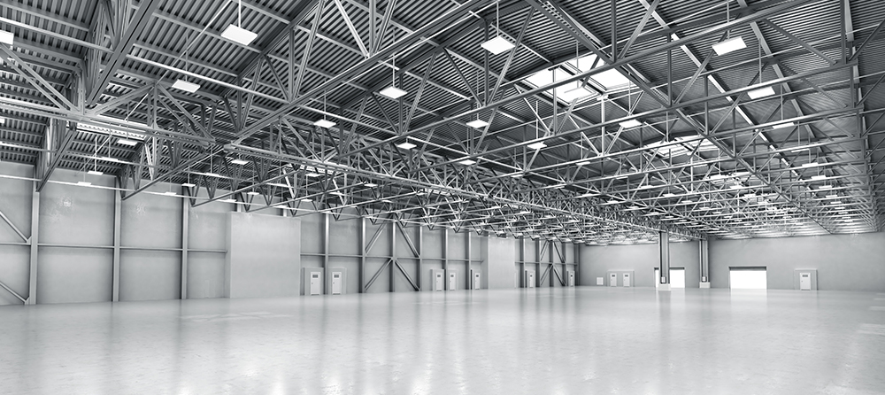

와 제 롤모델이 잡스에요!!! 아이폰 첫 출시되고 나서부터 계속 아이폰 쓰고 있는데 잡스가 너무 그리워요ㅠㅠ 지금은 돈만 벌려고 하는 것 같아서 디자인 발전도 없고ㅠㅠ와 제 롤모델이 잡스에요!!! 아이폰 첫 출시되고 나서부터 계속 아이폰 쓰고 있는데 잡스가 너무 그리워요ㅠㅠ 지금은 돈만 벌려고 하는 것 같아서 디자인 발전도 없고ㅠㅠ와 제 롤모델이 잡스에요!!! 아이폰 첫 출시되고 나서부터 계속 아이폰 쓰고 있는데 잡스가 너무 그리워요ㅠㅠ 지금은 돈만 벌려고 하는 것 같아서 디자인 발전도 없고ㅠㅠ와 제 롤모델이 잡스에요!!! 아이폰 첫 출시되고 나서부터 계속 아이폰 쓰고 있는데 잡스가 너무 그리워요ㅠㅠ 지금은 돈만 벌려고 하는 것 같아서 디자인 발전도 없고ㅠㅠ와 제 롤모델이 잡스에요!!! 아이폰 첫 출시되고 나서부터 계속 아이폰 쓰고 있는데 잡스가 너무 그리워요ㅠㅠ 지금은 돈만 벌려고 하는 것 같아서 디자인 발전도 없고ㅠㅠ
Market Report
Shippers prep for worst - case Brexit scenario
Shippers prep for worst - case Brexit scenario
Greg Knowler,
JOC Senior Editor at IHS Markit
There is a renewed sense of urgency behind the Brexit preparations being undertaken by shippers and their service providers as they search for ways to keep supply chains moving after the United Kingdom exits the European Union on March 29.
The latest deal reached between Britain’s Theresa May government and the EU has failed to win any political support, and Brexit contingency planning suggests the private sector is assuming all trade with the EU will be on World Trade Organization (WTO) terms, regarded as a worst-case scenario.
Under WTO tariffs, UK goods exports to the EU, which account for 48 percent of total exports, would be subject to a trade-weighted average tariff of 5.7 percent, while EU exports to the UK (16 percent of total EU exports) would face 4.3 percent tariffs, according to trade research company Atradius.
“There would also be significant non-tariff barriers to trade, including customs controls, new border checks especially on food and agricultural products, and regulatory barriers,” the researcher noted.
To offset the delays that will be caused by additional customs and documentation checks for UK imports, some shippers are steadily building inventories ahead of March. In fact, the UK government last week asked supermarkets around the country to hold as much stock as possible in case no deal can be reached. Additional customs checks would dramatically reduce capacity at the Calais-Dover trade corridor, impacting the 75 percent of all roll-on, roll-off freight from Europe that passes through the Dover Straits, or more than 4 million accompanied trucking units, i.e., truck, trailer, and driver.
Shahar Ayash, Tigers Global Logistics regional managing director for the UK and Europe, said there would be implications for trade whether or not a deal was reached, and customers were revising their strategies.
An option: inventory splitting between UK and Europe
Traditionally, shippers have used large distribution centers (DCs) in Europe to manage regional supply chains, leverage scale, save costs, manage one vendor rather than two, and have visibility and control over the business.
“We are telling customers that they can achieve these benefits, and more, by splitting the inventory between the UK and Europe and splitting their businesses into two DCs,” Ayash said. “They will enjoy scalability, visibility, and will even save costs by being closer to customers with faster delivery times.”
Getting shippers to commit to warehouse contracts was not easy, as pointed out by Johannes Barthels, TOC International Logistics international director for ocean freight Europe. Most shippers are waiting for some sort of deal to be reached between the UK and Europe before locking themselves into a contract.

“A lot of our customers are very careful and are looking for warehouses on the continent rather than in the UK,” Barthels told JOC.com. “We have warehouses in the UK that are standing empty at the moment as we wait for shippers and forwarders. I have a warehouse in Birmingham that is half empty because no one wants to sign an agreement.”
However, not everyone agrees with the additional warehouse approach. In a report studying Brexit contingency options, Liverpool-based UK port operator Peel Ports warned that there could be negative consequences of building contingency stock and introducing a warehouse into the UK supply chain routing.
The port operator said that although the plan would mitigate delays at border control, it would lead to increased mileage by causing trucks to deviate from their normal route. Cargo would need to be handled at least twice more, driving up labor and material handling equipment costs, and increasing the risk of damage. It was also unlikely that warehouses for most companies would be available on a flexible basis, and the contingency plans could require long-term lease commitments of five-plus years.
One solution offered by Peel Ports was that where time was not crucial, rather than traveling as accompanied non-perishable freight, the cargo could move on unaccompanied services. Instead of goods being stored in a warehouse as a contingency, manufacturers and retailers would be able to build contingency stock at the port of entry using stand trailers and removing the need for warehousing.
“The potential problem that is faced post-Brexit is that the vast majority of these [accompanied] units will want to leave Dover immediately on arrival, or just 90 minutes after vessel departure from Calais. This pressures the Border Force to complete all clearances,” the Peel report noted.
But by using unaccompanied trailers, which may not be needed for a number of hours after a vessel’s arrival, it provided breathing space for the authorities to complete their border clearances without being pressured by a 90-minute crossing time.
14,000 trucks cross UK-EU border daily
An estimated 14,000 trucks are crossing the UK-EU border every day, and 53 percent of UK imports originate in Europe. A forwarder whose trucks make 20,000 trips a year between Europe and the UK is Netherlands-based Jan De Rijk Logistics. The service provider’s CEO, Sebastiaan Scholte, said no deal would really cause a problem.

“The WTO rules will apply so there will be higher import duties, but we will also need permits for drivers and for trucks,” he said. “If you go out of the EU, for example into Ukraine, you need to ask the EU for permission, so it is unlikely there will be enough permits to go from the EU to the UK.”
While most of the contingency plans revolve around keeping dry cargo moving, how to transport refrigerated products from Europe to the UK is developing into a major headache.
Cross-channel operator Brittany Ferries said it has been warned that every vehicle carrying refrigerated goods, food, and other natural products may face inspections upon arrival in France after the UK leaves the EU. Around one-third of the 210,000 freight units carried by Brittany Ferries every year would be affected.
In a statement, Brittany Ferries said the huge warehouses needed for the storage and inspections did not exist in key French ports of Roscoff, St. Malo, or Cherbourg, and were not likely to be constructed by March 2019. That meant fewer entry points for hauliers into France and rendered pointless any plans to boost shipping capacity, said Christophe Mathieu, CEO of Brittany Ferries.
“In a worst-case scenario, British hauliers carrying refrigerated goods could face the prospect of far longer journeys — perhaps hundreds of additional miles — to find a French port equipped to process their consignment,” he said. “When they finally get there they could encounter further delays waiting for checks to take place.”
Despite the UK's chaotic progress in preparing for its EU exit, leading ferry operator P&O Ferries somewhat surprisingly put its faith in the ability of authorities to arrive at a workable solution before March 29.
“We have been engaging closely with the authorities on both sides and they have [told us] that they are fully aware of the economic and commercial importance of the free flow of traffic across their borders," said Dan Bridgett, head of communications at P&O Ferries. "We expect them to act to mitigate the impact of any reintroduced customs and sanitary controls so that our customers can continue to rely on our services for the import and export of vital goods.”
-
Great
322
-
Like
322
-
Sad
322
-
So-so
322
-
Angry
322